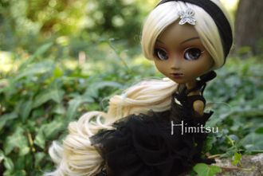
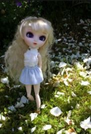
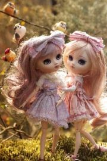
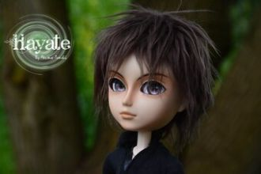
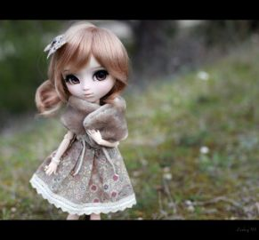
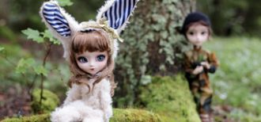
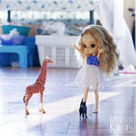
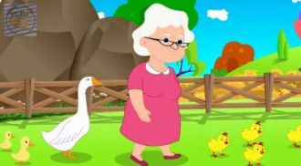
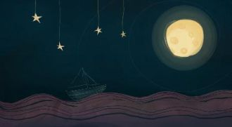
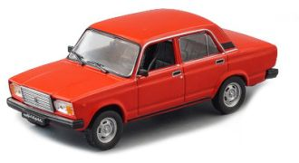

Гишгэж яваа цэцэгт ногоон газар миньГэрэлт нарны цэлмэг номин тэнгэр миньЭх орон төрөлх миний өлгийЭлгэн садан түмний алтан дэлхий
Забытой тропинкой я шла за рекой,И эхо манило меня за собой,Волшебные звуки в лесной тишинеНа крылышках нежных летели ко мне.
Вьюга. Вьюга, ты моя подруга.Вьюга. Вьюга. Снегом замело!
Киты-кошкиКо мне залетают,Когда солнце тонетВ тёмных водах огней.Киты-кошкиМеня понимаютИ забираютПолетать, как во сне.

Summer breeze, makes me feel fine,
Blowin' through the jasmine in my mind.

Вступление:- Почему всё цифры, цифры,Говорим о них, поём? -Просто этот островТочно с математикой знаком. Что ж, давайте поиграем!

Es kann durchaus manchmal vorkommen im Lebenda hat man eine quadratische Gleichung gegeben,die man umstellen will, doch die Schwierigkeit dabei
If you try to solve a quadratic equation,I promise you: It's possible without any frustration,if you take everything, move it to one side,

Kan du huske hvem jeg varkan du huske nogetsolen flimrede over Søernevi vippede i en plastiksvanebådhelt verliebt, helt fortabt

Laila, Laila, Laila, Laila, LaiLaila, Laila, Laila, Laila, Lai

Get downTake offTurn onTune inFlashdance
What a feelingGet downTake offTurn onTune inDon't stop
First when there's nothingBut a slow glowing dreamThat your fear seems to hideDeep inside your mind.All alone I have cried
Проза:Вместо синуса я пишу сразу минус ноль целых восемь десятых, в квадрате, да? Потому что у меня синус квадрат альфа.
В результате что я получу.
Эпсилон альфа бета гамма,Дельта альфа альфа штрих.Дельта альфа бета штрих,Дельта альфа гамма штрих.

Η γιαγιά μας η καλήέχει κότες στην αυλήκότες και κοτόπουλαχήνες και χηνόπουλα

Φεγγαράκι μου λαμπρόφέγγε μου να περπατώνα πηγαίνω στο σχολειό,να μαθαίνω γράμματα,γράμματα, σπουδάγματα,του Θεού τα πράγματα.

Припев:Колёсики, колёсики и красивый руль!По чёрному асфальтику мчит красный мой Жигуль.Проедет мимо Москвича и фарой подмигнёт.
Я на сцену выхожу,В зал от страха не гляжу.Вам легко смотреть из зала,Как на сцене я дрожу.Ручка ходит не туда,Ножка ходит не туда,